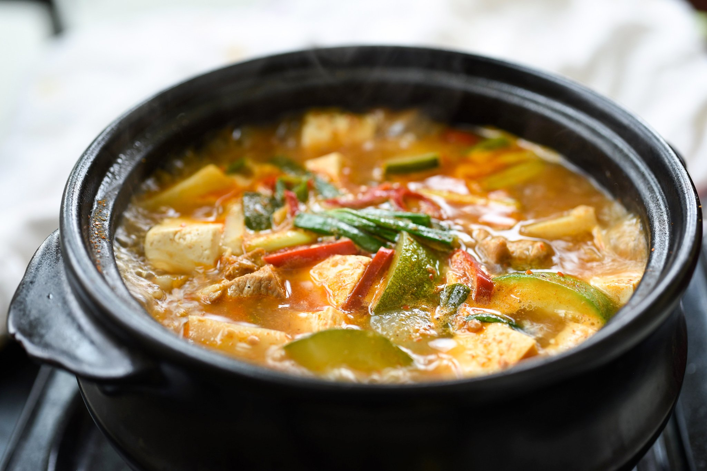

Doenjang Jjigae (된장찌개)

Description
Doenjang-jjigae, referred to in English as soybean paste stew, is a Korean traditional jjigae, made from the primary ingredient of doenjang, and additional optional ingredients vegetables, seafood, and meat.
Ingredients
- 1 medium potato, peeled and cut into ½-inch cubes (about 1 cup)
- 1 medium onion, cut into ½-inch pieces (about 1 cup)
- 1 small zucchini, cut into ½-inch pieces (about 1 cup)
- 1 green Korean chili pepper (cheong-gochu), stemmed and chopped
- 4 garlic cloves, minced
- 4 large shrimp, shelled, deveined, washed, and coarsely chopped (about ⅓ cup)
- 2½ cups water
- 7 dried anchovies, guts removed
- 5 tablespoons fermented soybean paste (doenjang)
- 6 ounces medium-firm tofu, cut into ½-inch cubes (about 1 cup)
- 2 green onions, chopped
Steps
- Combine the potato, onion, zucchini, chili pepper, garlic, and shrimp in a 1½-quart (6 cups) earthenware pot or other heavy pot.
- Wrap the dried anchovies in cheesecloth (or a dashi bag, a pouch for stock-making sold at a Korean grocery store), and put them into the pot with other ingredients Add water and cover.
- Cook over medium-high heat for 15 minutes until it starts boiling. If you use a stainless steel pot, it will take less than 15 minutes, about 7 to 8 minutes.
- Stir in the soybean paste, mixing well. Cover and cook for 20 minutes longer over medium heat.
- Add the tofu and cook for another 3 minutes. Remove the anchovy pouch and discard.
- Sprinkle with the green onions and serve as a side dish to rice. Serve it directly from the pot, or transfer to a serving bowl. Everybody can eat together out of the pot, or portions can be ladled out in individual bowls for each person.